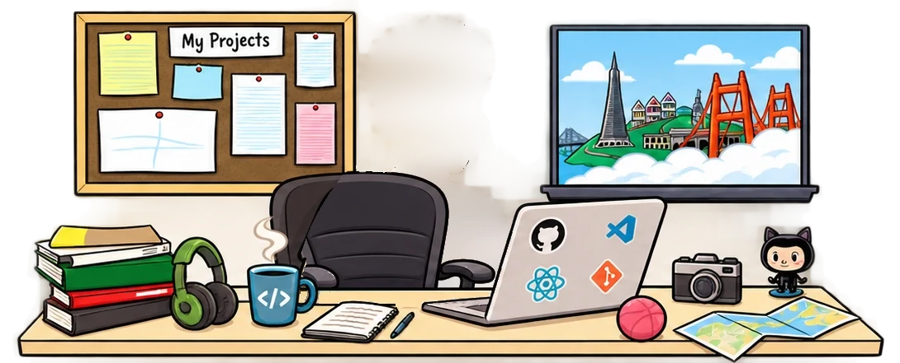
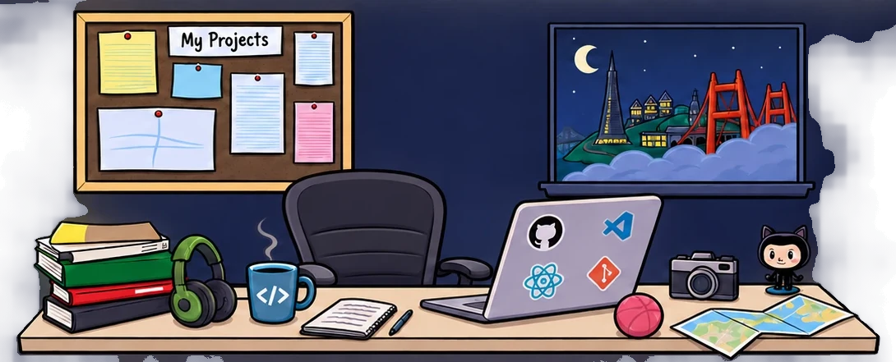
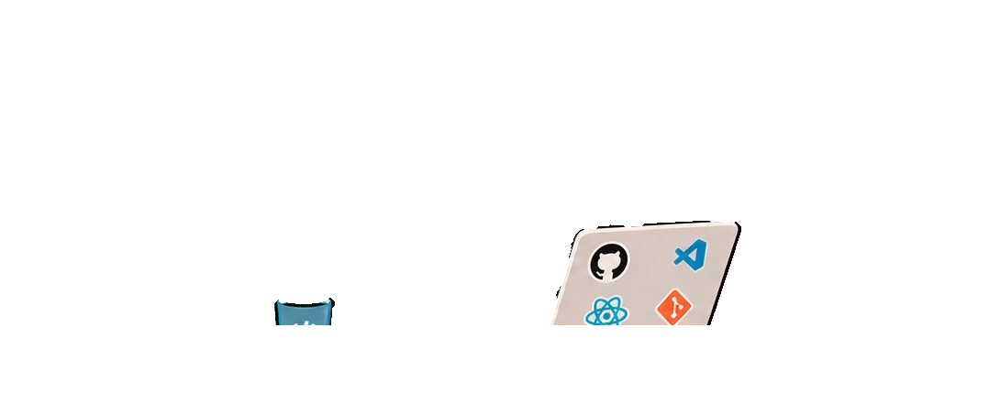
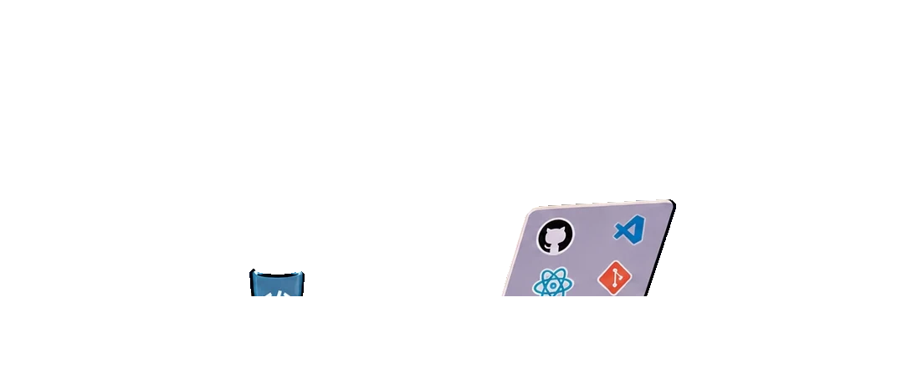

I’m Amit, Data Science & Engineering at the Technion. I build things where software, data and AI meet: from agents that delegate work to each other, to pipelines that check whether a hotel is as quiet as it claims. I love basketball, anime and anything sweet, and I can’t leave a system alone until I understand how it works.
Psst… hover my name (or anything on the desk) to see what’s clickable.Psst… tap anything with a dot on my desk. Night shift. The best bugs come out after midnight.